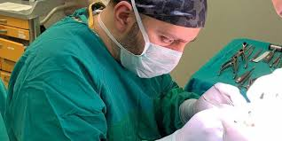

Doğal Güzelliğinizi Ortaya Çıkarın
Dr. Murat Yazıcı ile güvenli ve etkili estetik çözümler
Randevu AlınDr. Murat Yazıcı Hakkında
Dr. Murat Yazıcı, estetik ve reconstructive cerrahi uzmanıdır. İstanbul Üniversitesi Cerrahpaşa Tıp Fakültesi mezunu olan Dr. Yazıcı, alanında 15 yılı aşkın deneyime sahiptir.
Klinik olarak, hastalarımıza en yüksek standartlarda hizmet sunmayı ve doğal sonuçlar elde etmeyi hedefliyoruz. Her hastamız için kişiselleştirilmiş tedavi planları oluşturuyoruz.
- Estetik Cerrahi Uzmanı
- Reconstructive Cerrahi Uzmanı
- Uluslararası Sertifikalı
- 15+ Yıllık Deneyim

Hizmetlerimiz
Yüz Estetiği
- Rhinoplasti (Burun Estetiği)
- Yüz Germe (Face Lift)
- Göz Estetiği (Blepharoplasti)
- Dudak Dolgusu
- Botoks Uygulamaları
Vücut Estetiği
- Meme Estetiği
- Karın Germe
- Liposuction
- Brazilian Butt Lift
- Kol ve Bacak Estetiği
Cilt Bakımı
- Lazer Uygulamaları
- Kimyasal Peeling
- Mezoterapi
- PRP Tedavisi
- Cilt Gençleştirme
Önce ve Sonra
Hastalarımızın memnuniyetini gösteren bazı örnekler.